2024
Q1
-
-
-
-
2023
Q4
231230
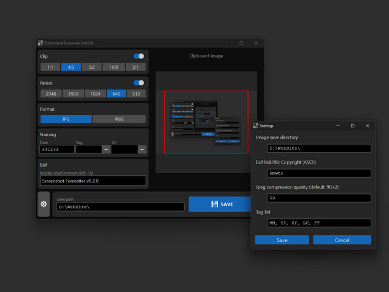Screenshot Formatter v0.2.0
231115
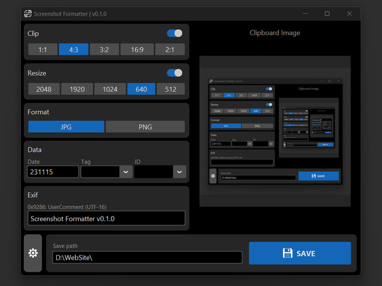Screenshot Formatter v0.1.0
-
-
Q3
230719_SP5

Lowpoly dummy: TT-HL8
230718

Paper clay trees
-
-
Q2
230527_SP5
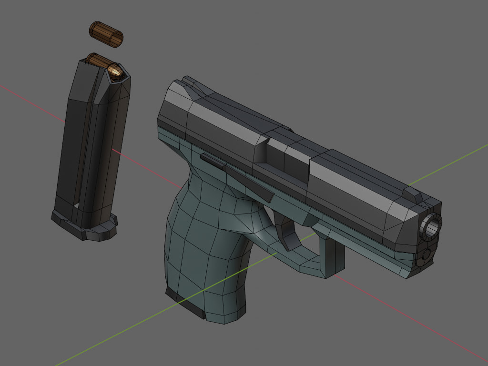Lowpoly dummy: LD_WP_HK-VP9
230516_MM
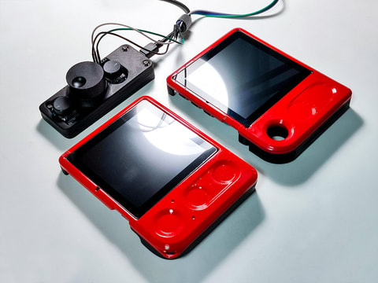MM KP Prototypes
230430_SP5
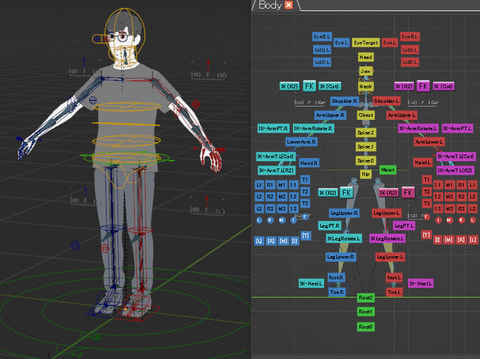Minimal human rig v1.1.1
230428_4689

Camera grip
Q1
230331_SP5_2
Lowpoly human (skinned)
230331_SP5_1
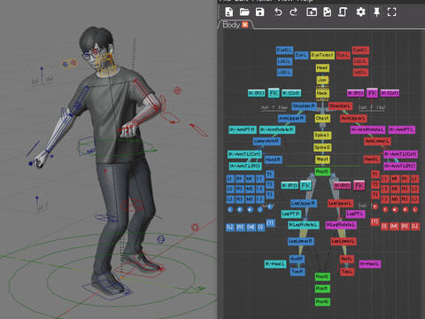Minimal human rig v1.0.0
230307_NS7
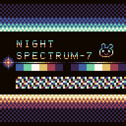3-bit Color palette
230303_KP
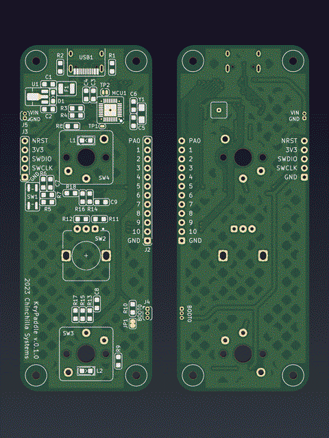KeyPaddle PCB v0.1.0
2022
Q4
221222_KN
Sawagani pack
221113_2
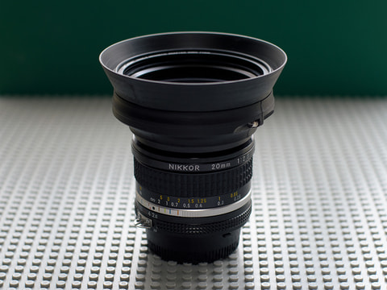Lens hood (77mm threads)
221109_KN
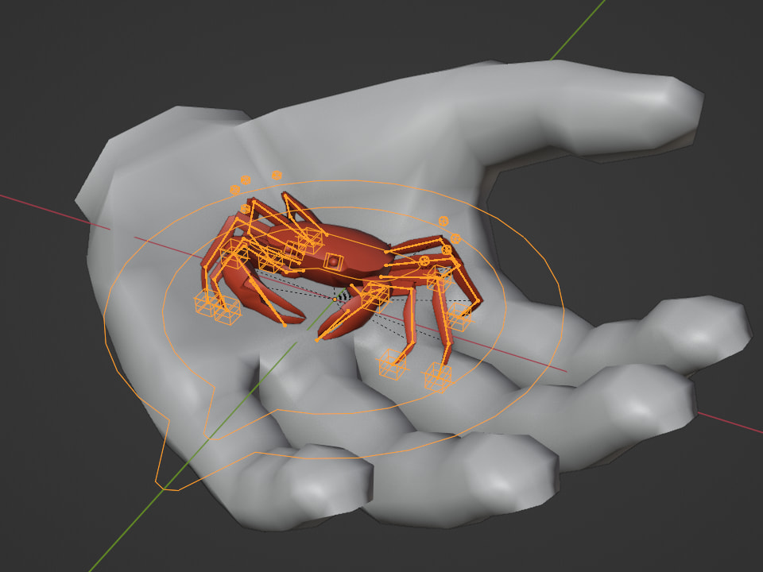Lowpoly dummy: A_KN_S
221105
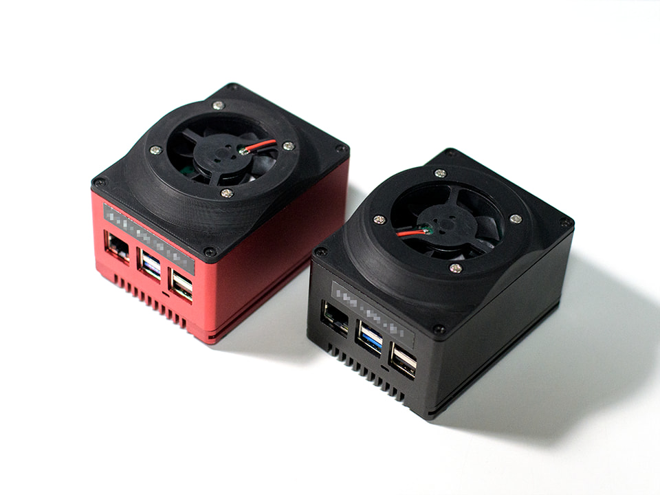SBC case fan
Q3
220928_KN
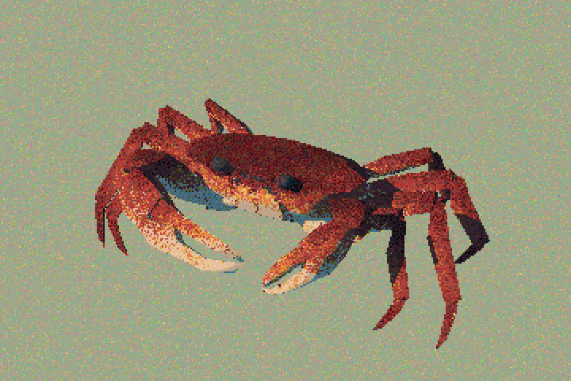Kani
220818
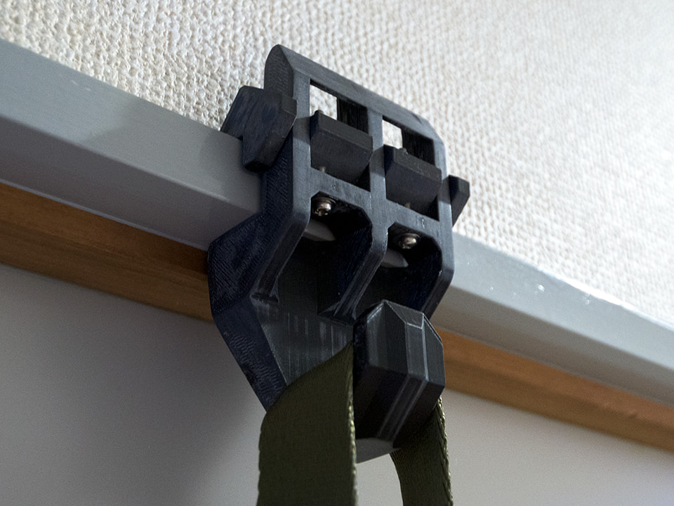Hook
220714
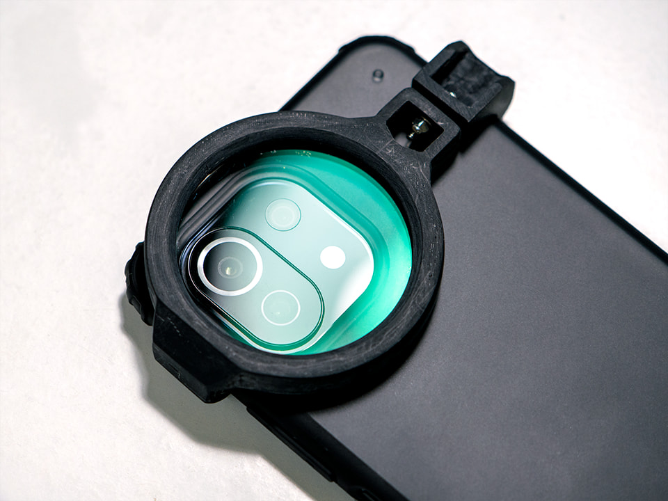Phone lens protector
220702_SP5
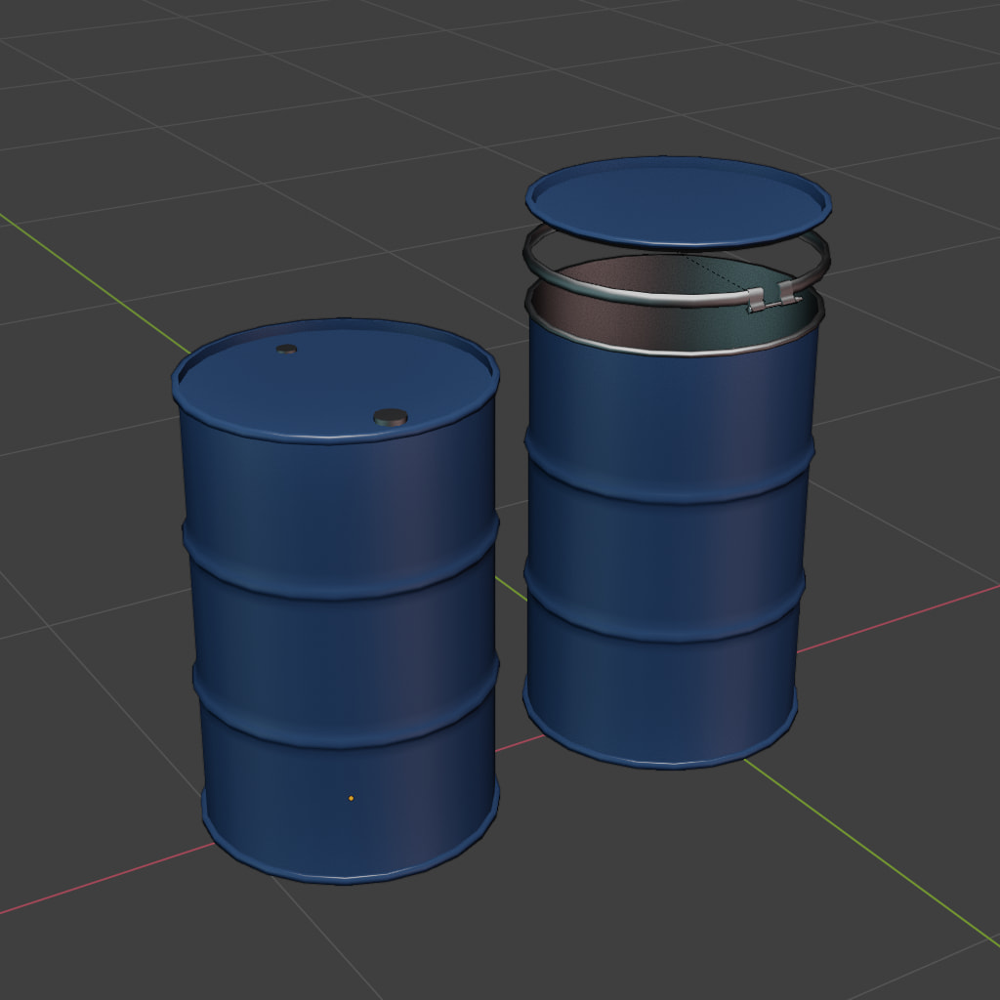Lowpoly dummy: DK_200L
Q2
220630_SP5
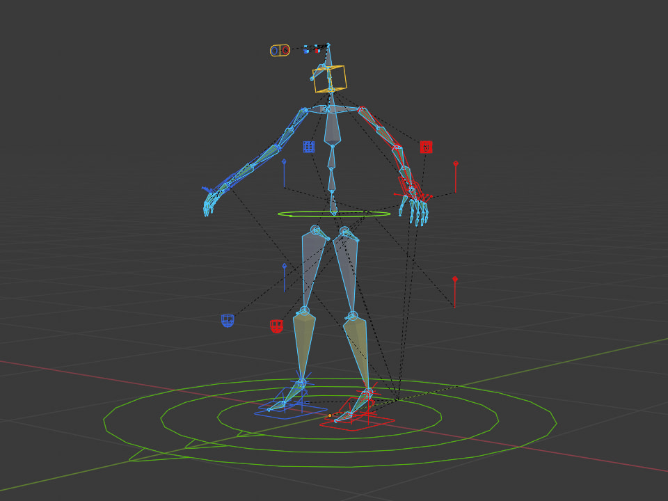Minimal human rig v0.9.0
220601_LPD
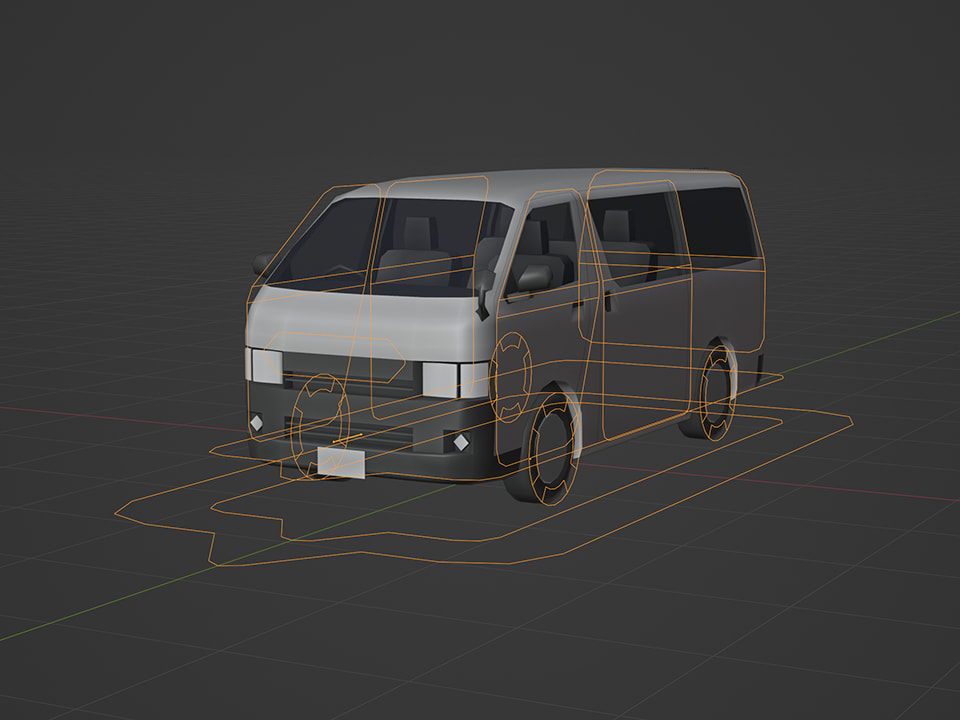Lowpoly dummy: T-HA2
220430_HS

DC cable reel
220401_SP5
Lowpoly human
Q1
220324_MQ

Lowpoly dummy: F-35A
220305_MMI
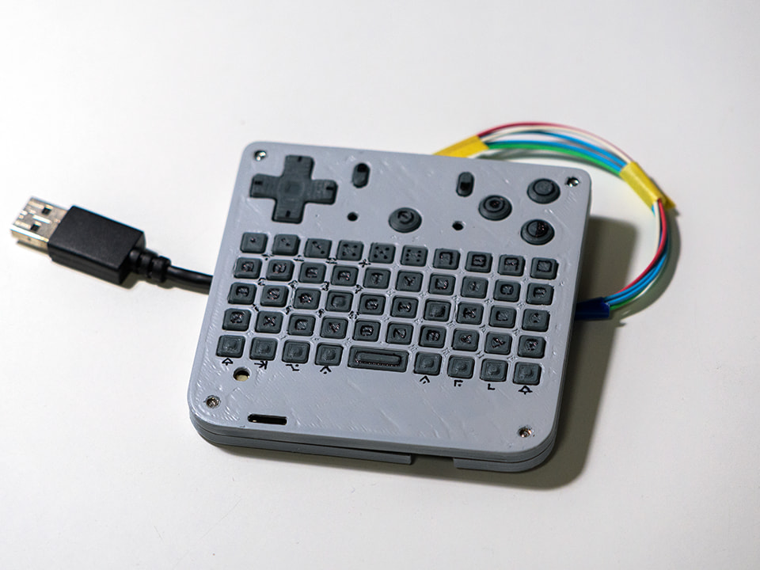Man machine interface
220302_3242

Sea
220125_2554

Tobacco shop
2021
Q4
211231_S

LCD control by RK3308 VOP
211224_S
LCD control by RK3308 VOP
211122_MMI

MMI PCB v0.4.0
211023_S

CPU/LCD module PCB v0.2.3
Q3
210914_SP4B

Gaze-M
210901_SP4G
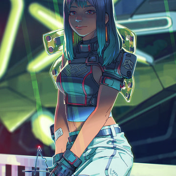Gaze-F
210725_SP3
210711_SP3

Off limit
Q2
210522_S
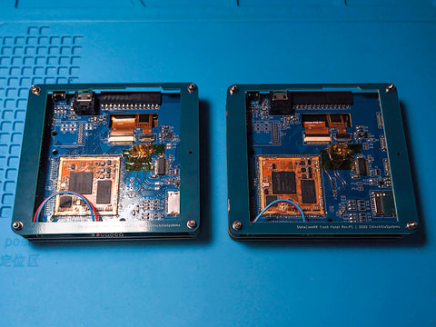Make CPU/LCD module samples
210512_S

Rework
210506_SP2
Martial law
210505_SP2

Martial law
Q1
210228
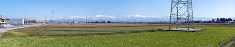Tateyama
210220

Ancient machine x2
210210_TST

Study
210106_CG
2020
Q4
201228_2DCG
doodle
201213
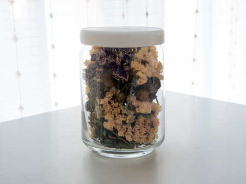Dry flower
201101_DEV2

Handheld PC Rev.P (Back)
201101_DEV1

Handheld PC Rev.P (Front)
Q3
200917_FLM

CURE (1997)
200913_FLM

No Country for Old Men (2007)
200803_PF

200701_BHTA
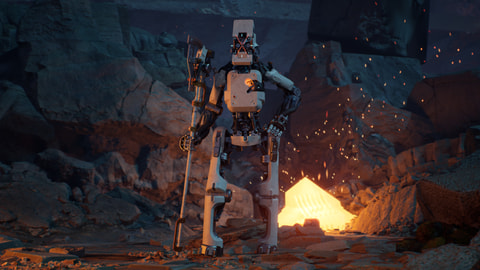Q2
200616_ADV

200511_BHTA

Test project, Design (Back)
200508_BHTA

Test project, Design (Front)
200423_LoB

Next project
Q1
200216
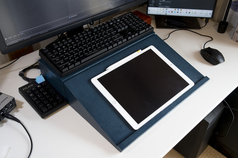DIY iPad drawing board
200128_PF

Font inspired by PCB
200111_CT

STM32 board with USB-C Rev.P2
200111_CK

Handheld keyboard Rev.P
2019
Q4
191215_ADV2

Photo based material (Grass)
191215_ADV1
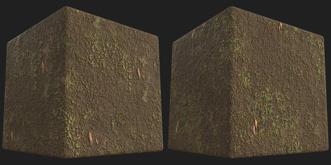Photo based material (Soil)
191213_ADV

Photo based material (Asphalt)
191109_CT
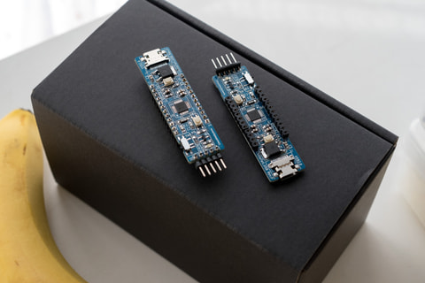STM32 board with USB-C Rev.P